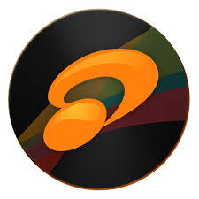
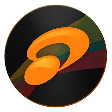

Personify
Personify
Personify
Personify
Hobi dalam Kamus Besar Bahasa Indonesia (KBBI) berarti kegemaran, kesenangan istimewa pada waktu senggang, bukan pekerjaan utama.
Pada halaman ini akan saya tampilkan beberapa hobi yang saya miliki untuk mengisi waktu luang saya dan memenuhi kesenangan saya.
Berikut adalah beberapa hobi saya
Hiking adalah kegiatan berjalan kaki di alam terbuka, biasanya di jalur yang sudah ditentukan, seperti di pegunungan, hutan, atau perbukitan, dengan tujuan menikmati alam dan berolahraga.
Hiking banyak memberikan manfaat bagi saya pribadi. Walaupun banyak orang yang tidak suka karena dianggap melelahkan namun itu adalah suatu hal yang menjadi tantangan tersendiri bagi saya. Karena dengan kelelahan itu akan terbentuk badan yang sehat. Lalu dengan lelah tersebut juga memberikan saya kepuasan tersendiri karena setelah melewati perjalanan yang panjang dan melelahkan, semua akan terbayar ketika kita telah berhasil melakukannya. Selain itu, hiking juga memberikan saya kesempatan untuk menjelajahi alam, menikmati pemandangan yang indah, dan merasakan kedamaian yang sulit ditemukan di kehidupan sehari-hari.


Saya juga suka menonton video tentang gunung, ini adalah salah satu contohnya.
Gaming adalah aktivitas bermain video game, baik secara individu maupun dalam kelompok, yang dapat dilakukan di berbagai platform seperti konsol, komputer, atau perangkat mobile.
Karena menurut saya game adalah salah satu cara untuk menyegarkan pikiran dan membuat kesenangan tersendiri.
Saya bukan tipe orang yang bermain game untuk serius, hanya untuk menghibur diri sendiri saja.
Saya hanya memiliki 1 game favorit yaitu Mobile Legends
Listening to music adalah aktivitas mendengarkan musik, baik secara langsung maupun melalui perangkat elektronik, yang dapat memberikan pengalaman emosional dan hiburan.
Bagi saya, mendengar musik memiliki ketenangan tersendiri. Mendengar musik dapat merubah suasana hati.
Saya sering mendengar musik contohnya ketika sedang mengerjakan tugas.

 
